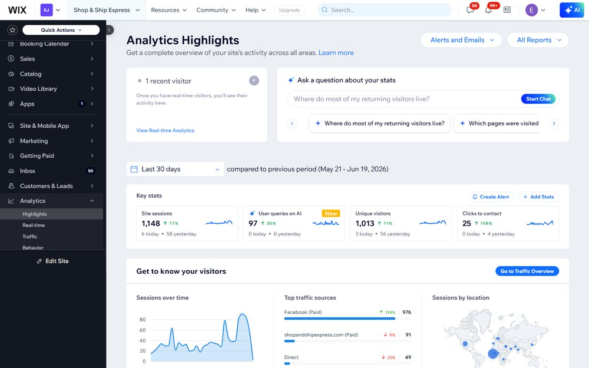

Best for
Know what is working
Analytics & Website Visibility
A simple performance view that helps you understand visitors, top pages, traffic sources, clicks, and what should be improved next.
What can be included
- Website traffic review
- Top page review
- Contact click review
- Visitor behavior notes
- Search/AI visibility check
- Priority improvement list
Simple packages
Start small or build the full path.
The exact offer can be adjusted after I see your website, platform and business goal.
Basic
Clarity Review
Review the current website or workflow and get the main fixes that matter first.
Standard
Build or Improve
Build the core pages, sections or system needed to make the business clearer.
Premium
Full Setup
Connect the website, conversion path, tracking and follow-up structure more completely.
Related work
Examples connected to this service.
Each project shows the kind of business problem this service can help with.

Shop & Ship Express Analytics
Wix AnalyticsA clearer view of how the website is performing after launch, including visitors, clicks, pages, and traffic sources.